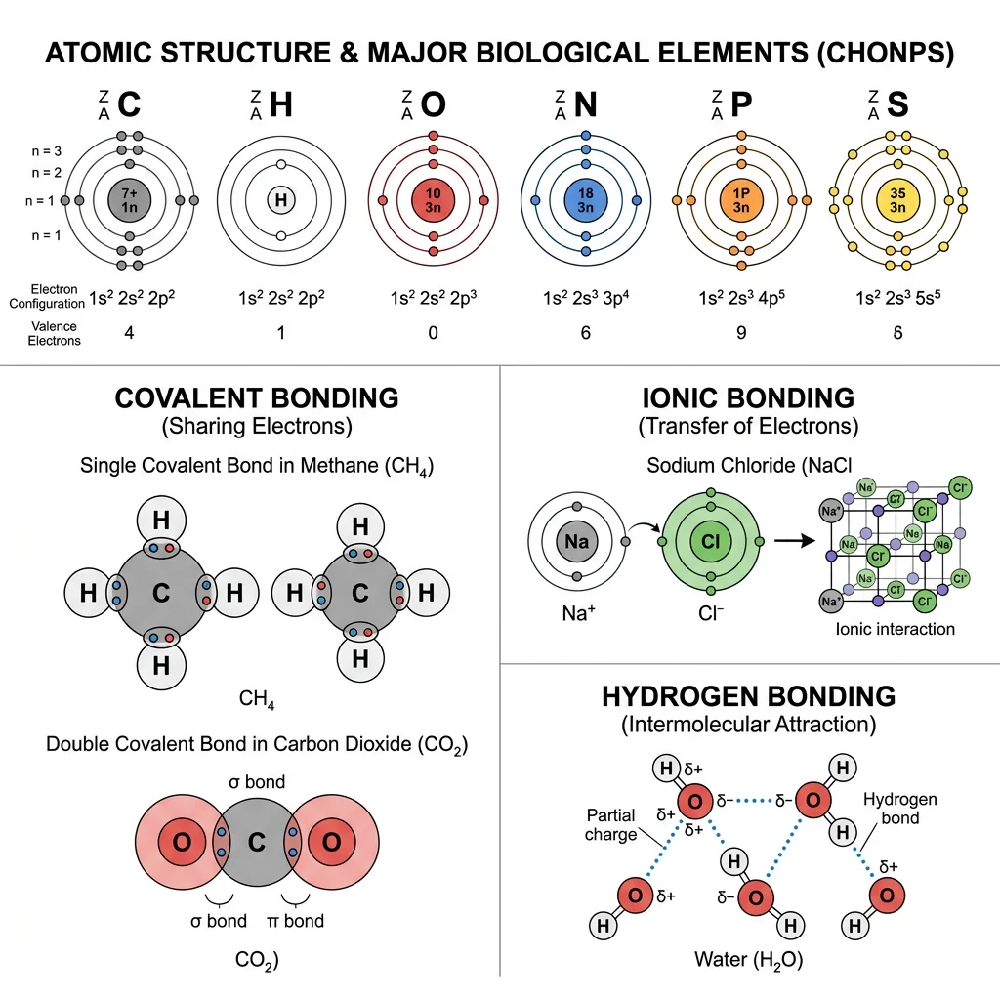
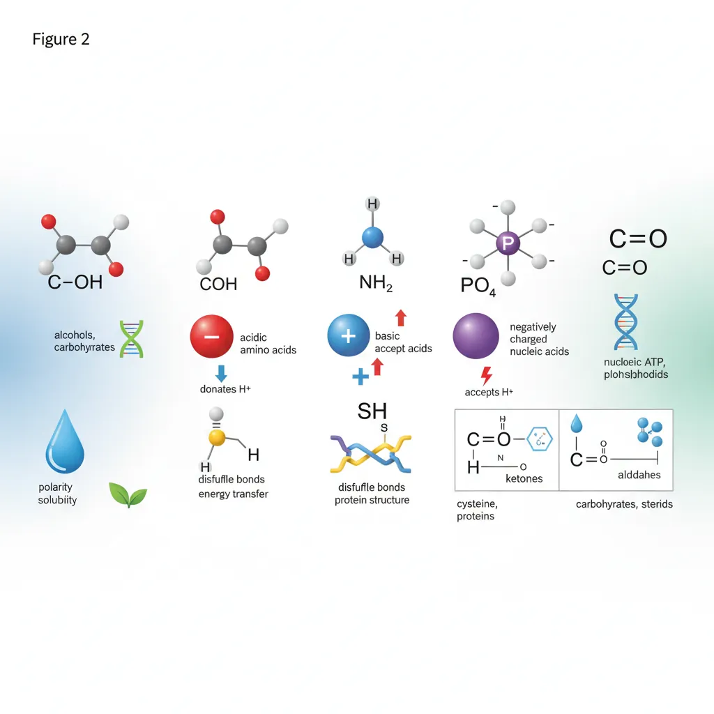
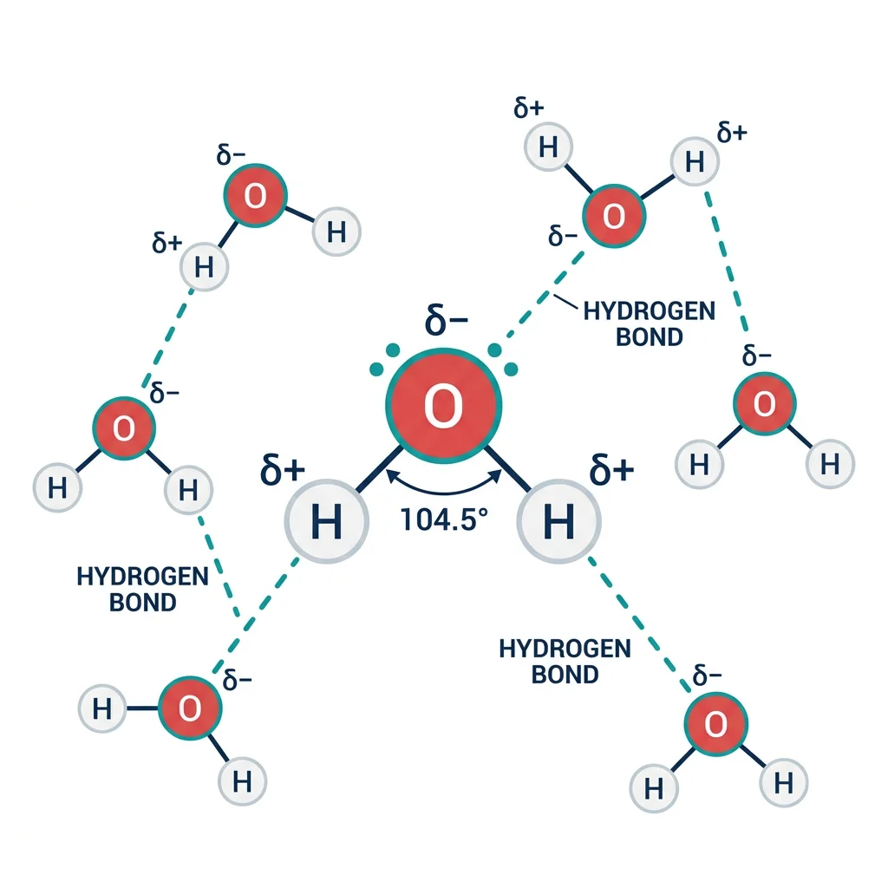
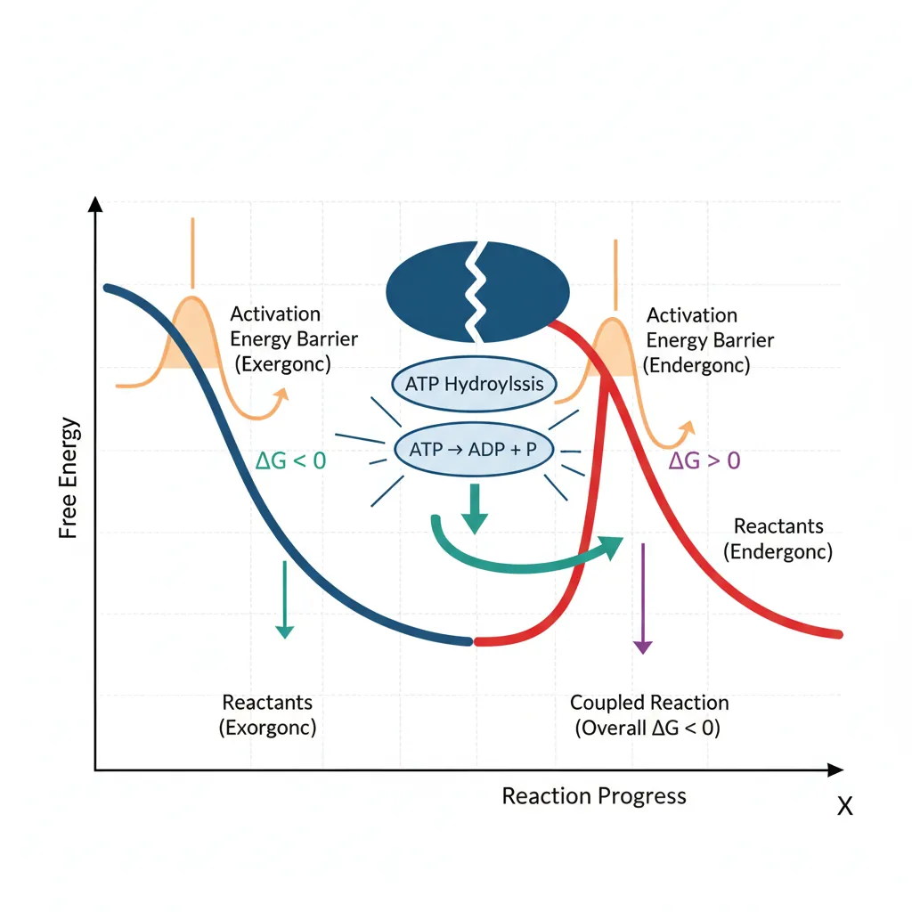
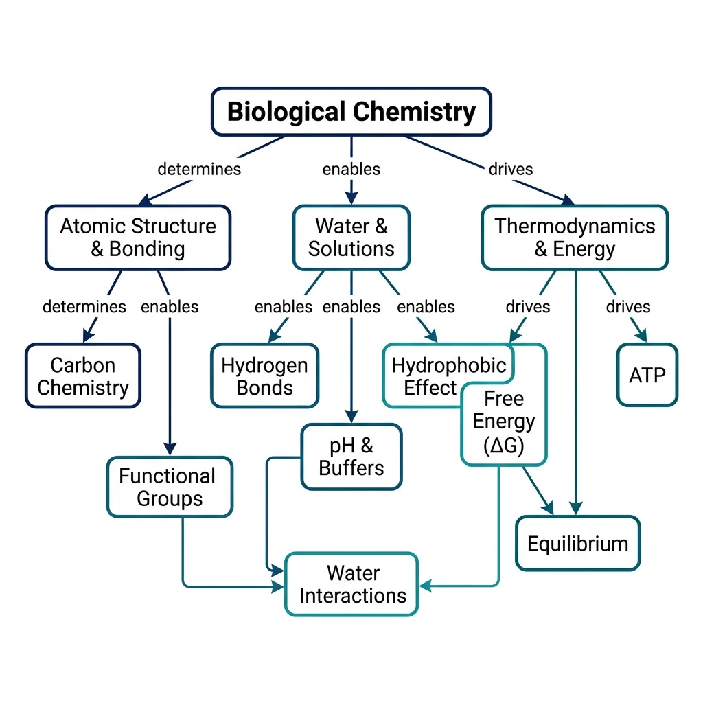

Biochemistry Mastery
Biological Chemistry Fundamentals
Atoms, bonds, functional groups, thermodynamicsWater, pH & Biological Buffers
Water polarity, pH, Henderson-Hasselbalch, blood buffersAmino Acids & Protein Structure
Amino acid classes, peptide bonds, protein foldingEnzymes & Catalysis
Kinetics, Michaelis-Menten, inhibition, regulationCarbohydrates & Lipids
Sugars, glycogen, fatty acids, cholesterol, membranesMetabolism & Bioenergetics
ATP, glycolysis, gluconeogenesis, redox carriersCitric Acid Cycle & Oxidative Phosphorylation
Acetyl-CoA, ETC, ATP synthase, oxygen dependenceSignal Transduction & Cell Communication
GPCRs, kinases, calcium, hormone cascadesNucleic Acids & Gene Expression
DNA, replication, transcription, translation, epigeneticsBrain & Nervous System Biochemistry
Neurotransmitters, ion gradients, myelin, neurodegenerationHeart & Muscle Biochemistry
Cardiac metabolism, actin-myosin, energy systemsLiver Biochemistry
Glucose homeostasis, detox, urea cycle, bileKidney Biochemistry & Acid-Base
pH regulation, ion transport, hormonal functionsEndocrine System Biochemistry
Hormone classes, signaling, glucose & stress controlDigestive System Biochemistry
Gastric acid, enzymes, bile, absorption, microbiomeImmune System Biochemistry
Antibodies, cytokines, complement, oxidative burstAdipose Tissue & Energy Balance
Triglycerides, lipolysis, leptin, obesityTissue-Specific Metabolism
Fed vs fasting, organ fuel selection, starvationMolecular Basis of Disease
Diabetes, cancer metabolism, neurodegenerationClinical Biochemistry & Diagnostics
Blood tests, liver/kidney markers, lipid panelsAtomic Structure & Bonds
Every molecule in your body — every enzyme, every strand of DNA, every lipid in your cell membranes — is built from atoms obeying the same fundamental rules as the rest of the universe. Biological chemistry begins by understanding how atoms form bonds, and how the geometry of those bonds determines the shape, reactivity, and function of biomolecules.
The human body is composed of approximately 60 elements, but just six — carbon (C), hydrogen (H), oxygen (O), nitrogen (N), phosphorus (P), and sulfur (S) — account for about 98.5% of body mass. These are collectively known by the mnemonic CHONPS. Additional elements like calcium, potassium, sodium, chlorine, magnesium, iron, and zinc play critical roles as cofactors, structural minerals, and electrolytes.

Electron Configuration & Valence
Atoms consist of a dense nucleus containing protons (positive charge) and neutrons (no charge), surrounded by electrons (negative charge) in energy levels (shells). The outermost shell contains the valence electrons — these determine how an atom bonds with others. The octet rule states that atoms are most stable when their outermost shell contains 8 electrons (or 2 for hydrogen).
| Element | Atomic Number | Valence Electrons | Bonds Formed | Biological Role |
|---|---|---|---|---|
| Carbon (C) | 6 | 4 | 4 covalent | Backbone of all organic molecules |
| Hydrogen (H) | 1 | 1 | 1 covalent | pH balance, hydrogen bonding |
| Oxygen (O) | 8 | 6 | 2 covalent | Cellular respiration, water |
| Nitrogen (N) | 7 | 5 | 3 covalent | Amino acids, nucleotides, neurotransmitters |
| Phosphorus (P) | 15 | 5 | 5 covalent | ATP, DNA/RNA backbone, phospholipids |
| Sulfur (S) | 16 | 6 | 2–6 covalent | Disulfide bridges, amino acids (Cys, Met) |
Wöhler's Synthesis of Urea — The Fall of Vitalism
In 1828, Friedrich Wöhler accidentally synthesized urea (a biological molecule found in urine) from inorganic ammonium cyanate in his laboratory. This was revolutionary because scientists at the time believed in vitalism — the idea that organic (living) molecules could only be produced by a mysterious "vital force" within living organisms. Wöhler's synthesis proved that the same atoms and chemical bonds govern both living and non-living matter. He famously wrote to his mentor Berzelius: "I can make urea without needing a kidney!" This experiment is considered the birth of organic chemistry and, by extension, biochemistry.
Chemical Bonds
Chemical bonds are the "glue" holding atoms together in molecules. In biological systems, three types dominate:
Covalent Bonds
Formed when two atoms share one or more pairs of electrons. Covalent bonds are the strongest bonds in biology and form the backbone of all organic molecules. They can be:
- Nonpolar covalent: Electrons shared equally (e.g., C–C, C–H bonds). These make molecules hydrophobic.
- Polar covalent: Electrons shared unequally due to electronegativity differences (e.g., O–H, N–H bonds). The more electronegative atom pulls electrons closer, creating partial charges (δ+ and δ−).
Ionic Bonds
Formed when one atom transfers electrons completely to another, creating oppositely charged ions (cation+ and anion−) that attract each other. In biology, ionic bonds are critical for:
- Salt bridges in protein structure — e.g., between lysine (positive) and glutamate (negative) side chains
- Electrolyte balance — Na⁺, K⁺, Ca²⁺, Cl⁻ ions in body fluids
- Mineral structure — calcium phosphate [Ca₃(PO₄)₂] in bone and teeth
Non-Covalent Interactions
Individually weak but collectively powerful, non-covalent interactions are essential for molecular recognition, protein folding, and DNA structure:
| Interaction | Strength (kJ/mol) | Mechanism | Biological Example |
|---|---|---|---|
| Hydrogen bond | 12–30 | Donor (N–H, O–H) → acceptor (O, N) | DNA base pairing, water structure |
| Van der Waals | 0.4–4 | Temporary dipole induction | Enzyme–substrate contact surfaces |
| Ionic (electrostatic) | 20–80 | Opposite charges attract | Protein salt bridges |
| Hydrophobic | ~4–12 | Nonpolar groups cluster in water | Protein core, lipid bilayers |
Molecular Geometry
VSEPR theory (Valence Shell Electron Pair Repulsion) predicts molecular shapes by arranging electron pairs around a central atom to minimize repulsion. In biological chemistry, geometry determines function:
| Geometry | Bond Angle | Example | Biological Relevance |
|---|---|---|---|
| Tetrahedral | 109.5° | CH₄ (methane), α-carbon in amino acids | Carbon backbone of all biomolecules; chirality at α-carbon |
| Trigonal planar | 120° | C=O in carboxyl, C=C in alkenes | Peptide bond planarity; unsaturated fatty acids |
| Bent (V-shaped) | ~104.5° | H₂O (water) | Water's polarity and hydrogen bonding ability |
| Trigonal pyramidal | ~107° | NH₃ (ammonia) | Amino group geometry; nitrogen as H-bond donor |
Chirality is a critical geometric concept in biochemistry. When a carbon atom is bonded to four different groups, it becomes a chiral center (stereocenter), creating two mirror-image forms called enantiomers. Living organisms are remarkably stereospecific: virtually all amino acids in proteins are L-enantiomers, while all sugars in nucleic acids are D-enantiomers. Enzymes distinguish between enantiomers with exquisite precision — like a left hand fitting only a left glove.
import numpy as np
# Demonstrate bond energy calculations in biological molecules
# Compare single, double, and triple bond energies (kJ/mol)
bond_energies = {
'C-C (single)': 347,
'C=C (double)': 614,
'C≡C (triple)': 839,
'C-H': 413,
'O-H': 463,
'N-H': 391,
'C-O': 358,
'C=O': 799,
'C-N': 305,
'P-O': 335,
'S-S (disulfide)': 266
}
print("Bond Energies in Biological Molecules")
print("=" * 50)
for bond, energy in bond_energies.items():
bar = "█" * (energy // 20)
print(f"{bond:20s} {energy:4d} kJ/mol {bar}")
# Calculate energy released in glucose combustion (simplified)
# C6H12O6 + 6O2 → 6CO2 + 6H2O
bonds_broken = {
'C-C': 5 * 347, # 5 C-C bonds
'C-H': 7 * 413, # 7 C-H bonds
'C-O': 7 * 358, # 7 C-O bonds
'O-H': 5 * 463, # 5 O-H bonds
'O=O': 6 * 498 # 6 O=O bonds
}
bonds_formed = {
'C=O': 12 * 799, # 12 C=O bonds in 6 CO2
'O-H': 12 * 463 # 12 O-H bonds in 6 H2O
}
total_broken = sum(bonds_broken.values())
total_formed = sum(bonds_formed.values())
delta_h = total_broken - total_formed
print(f"\nGlucose Combustion Energy Estimate")
print(f"Energy to break bonds: {total_broken:,} kJ/mol")
print(f"Energy from new bonds: {total_formed:,} kJ/mol")
print(f"Net ΔH ≈ {delta_h:,} kJ/mol (exothermic)")
Functional Groups in Biomolecules
If carbon is the skeleton of biological molecules, then functional groups are the joints, muscles, and sensory organs that give those molecules their unique chemical personalities. A functional group is a specific arrangement of atoms within a molecule that determines its chemical reactivity, solubility, and biological function. Understanding functional groups is the key to predicting how any biomolecule will behave.

| Functional Group | Formula | Properties | Found In | Example |
|---|---|---|---|---|
| Hydroxyl | –OH | Polar, H-bond donor/acceptor | Alcohols, sugars, serine | Ethanol, glucose |
| Carboxyl | –COOH | Acidic, ionizes to –COO⁻ | Amino acids, fatty acids | Acetic acid, glutamate |
| Amino | –NH₂ | Basic, accepts H⁺ → –NH₃⁺ | Amino acids, nucleotides | Glycine, adenine |
| Phosphate | –PO₄²⁻ | Negative charge, energy transfer | ATP, DNA/RNA, phospholipids | ATP, DNA backbone |
| Sulfhydryl (Thiol) | –SH | Can form disulfide bonds (–S–S–) | Cysteine, coenzyme A | Glutathione |
| Carbonyl (Aldehyde) | –CHO | Polar, reactive | Aldose sugars | Glucose (open chain) |
| Carbonyl (Ketone) | C=O (internal) | Polar, reactive | Ketose sugars, ketone bodies | Fructose, acetone |
| Methyl | –CH₃ | Nonpolar, hydrophobic | DNA methylation, lipids | 5-methylcytosine |
| Ester | –COO– | Links acids to alcohols | Triglycerides, phospholipids | Fat storage |
| Amide | –CONH– | Peptide bond; stable, planar | Proteins, asparagine | All peptide bonds |
Aspirin — Functional Group Modification in Action
Salicylic acid (from willow bark) has long been used for pain relief, but its free hydroxyl (–OH) and carboxyl (–COOH) groups make it irritating to the stomach lining. In 1897, Felix Hoffmann at Bayer acetylated the hydroxyl group — replacing –OH with an ester group (–OCOCH₃) — to create acetylsalicylic acid (aspirin). This single functional group modification dramatically reduced gastric irritation while preserving anti-inflammatory activity. Aspirin works by irreversibly acetylating a serine residue in cyclooxygenase (COX) enzymes, blocking prostaglandin synthesis. This illustrates how understanding functional group chemistry leads directly to pharmaceutical innovation.
Biological Significance
Functional groups determine four critical properties of biomolecules:
1. Solubility & Polarity
Polar functional groups (–OH, –NH₂, –COOH, –PO₄²⁻) make molecules hydrophilic (water-soluble) by forming hydrogen bonds with water. Nonpolar groups (–CH₃, long hydrocarbon chains) make molecules hydrophobic. This polarity gradient is fundamental to membrane structure — phospholipids have a polar head (phosphate) and nonpolar tails (fatty acid chains), creating the bilayer that surrounds every cell.
2. Acid-Base Behavior
Carboxyl groups act as acids (proton donors: –COOH → –COO⁻ + H⁺), while amino groups act as bases (proton acceptors: –NH₂ + H⁺ → –NH₃⁺). At physiological pH (~7.4), amino acids exist as zwitterions — molecules with both positive and negative charges. This amphoteric nature is critical for protein buffering capacity and enzyme active-site chemistry.
3. Covalent Linkage Reactions
Many biological polymers are built by condensation reactions (dehydration synthesis) that link functional groups together with the loss of water:
- Peptide bond: –COOH + –NH₂ → –CO–NH– + H₂O (linking amino acids)
- Glycosidic bond: –OH + –OH → –O– + H₂O (linking sugars)
- Ester bond: –COOH + –OH → –COO– + H₂O (linking fatty acids to glycerol)
- Phosphodiester bond: –OH + –PO₄ + –OH → backbone of DNA/RNA
4. Redox Chemistry
Functional group oxidation state determines energy content. Fats are more reduced (more C–H bonds) than sugars, which is why fats store more energy per gram (~9 kcal/g vs ~4 kcal/g). Cellular metabolism systematically oxidizes these reduced carbon compounds, transferring electrons to carriers like NAD⁺ and FAD to ultimately produce ATP.
import numpy as np
# Functional group properties at physiological pH (7.4)
# Demonstrate ionization states of amino acid functional groups
functional_groups = {
'Carboxyl (-COOH)': {'pKa': 2.3, 'type': 'acid'},
'Amino (-NH3+)': {'pKa': 9.7, 'type': 'base'},
'Phosphate (-H2PO4)': {'pKa': 6.8, 'type': 'acid'},
'Imidazole (His)': {'pKa': 6.0, 'type': 'base'},
'Sulfhydryl (-SH)': {'pKa': 8.3, 'type': 'acid'},
'Phenol (Tyr -OH)': {'pKa': 10.1, 'type': 'acid'},
'Epsilon-amino (Lys)': {'pKa': 10.5, 'type': 'base'},
}
ph = 7.4
print("Ionization States at pH 7.4")
print("=" * 65)
print(f"{'Group':25s} {'pKa':>5s} {'% Ionized':>10s} {'Charge':>10s}")
print("-" * 65)
for group, props in functional_groups.items():
pka = props['pKa']
if props['type'] == 'acid':
# For acids: % deprotonated = 100 / (1 + 10^(pKa - pH))
pct_ionized = 100 / (1 + 10**(pka - ph))
charge = "Negative" if pct_ionized > 50 else "Neutral"
else:
# For bases: % protonated = 100 / (1 + 10^(pH - pKa))
pct_ionized = 100 / (1 + 10**(ph - pka))
charge = "Positive" if pct_ionized > 50 else "Neutral"
print(f"{group:25s} {pka:5.1f} {pct_ionized:9.1f}% {charge:>10s}")
Water Interactions
Water is not merely a passive solvent — it is an active participant in biochemistry. Comprising 60–70% of human body mass, water's unique molecular properties shape every biological process, from enzyme catalysis to protein folding to membrane assembly. Understanding water's behaviour is so fundamental that many biochemists consider it the most important molecule in biology.

Why Water Is Remarkable
The water molecule (H₂O) has a bent geometry (~104.5° bond angle) due to its two lone electron pairs on oxygen. This creates a strong dipole moment — oxygen is partially negative (δ−) and hydrogen is partially positive (δ+). This polarity enables water to:
- Dissolve ionic compounds — by surrounding ions with hydration shells (Na⁺ attracted to δ− oxygen; Cl⁻ attracted to δ+ hydrogen)
- Dissolve polar molecules — by forming hydrogen bonds with hydroxyl (–OH), amino (–NH₂), and carboxyl (–COOH) groups
- Exhibit high specific heat — hydrogen bonds absorb large amounts of heat energy before water temperature rises, stabilizing body temperature
- Exhibit high heat of vaporization — evaporative cooling (sweating) is an efficient thermoregulation mechanism
- Act as a reactant — in hydrolysis reactions that break down polymers (proteins, polysaccharides, nucleic acids)
Hydrogen Bonding
A hydrogen bond forms when a hydrogen atom covalently bonded to an electronegative atom (the donor: typically N–H or O–H) is attracted to a lone pair on another electronegative atom (the acceptor: typically O or N). Each water molecule can form up to four hydrogen bonds — two as donor (via its two O–H bonds) and two as acceptor (via oxygen's two lone pairs).
Individual hydrogen bonds are weak (~20 kJ/mol vs ~350 kJ/mol for a covalent bond), but their collective strength is enormous. In liquid water at 25°C, approximately 3.4 out of 4 possible hydrogen bonds per molecule are formed at any instant, creating a dynamic, flickering network that restructures on the picosecond timescale.
| Biological System | H-Bond Role | Number of H-Bonds | Consequence |
|---|---|---|---|
| DNA double helix | A=T (2 bonds), G≡C (3 bonds) | ~6 billion per human genome | Holds complementary strands together |
| Protein α-helix | C=O···H–N (i → i+4) | ~1 per residue | Stabilizes secondary structure |
| Protein β-sheet | C=O···H–N between strands | ~1 per residue pair | Creates rigid, planar sheets |
| Enzyme active site | Substrate positioning | Variable (2–10) | Substrate specificity and catalysis |
| Cellulose fibers | Inter-chain H-bonds | ~3 per glucose | Rigid plant cell walls |
Latimer & Rodebush — Discovery of Hydrogen Bonding
In 1920, Wendell Latimer and Worth Rodebush first proposed the concept of the hydrogen bond to explain the anomalously high boiling point of water and the association of molecules like HF. They recognized that a hydrogen atom bonded to a highly electronegative atom could form an additional weak bond to a second electronegative atom. Linus Pauling later formalized and popularized the concept in his 1939 book The Nature of the Chemical Bond, demonstrating its crucial role in protein and nucleic acid structure — work that contributed to his 1954 Nobel Prize in Chemistry.
The Hydrophobic Effect
The hydrophobic effect is arguably the single most important driving force in biochemistry. It describes the tendency of nonpolar molecules to aggregate in aqueous solution — not because they are attracted to each other, but because water molecules are energetically penalized when forced to organize around them.
Thermodynamic Explanation
When a nonpolar molecule (e.g., a hydrocarbon) is placed in water, surrounding water molecules cannot form hydrogen bonds with the hydrophobic surface. Instead, they form an ordered "cage" (a clathrate structure) around the nonpolar molecule, which dramatically decreases entropy (ΔS < 0). Since the system naturally tends toward maximum entropy, the nonpolar molecules are driven to cluster together, minimizing the surface area exposed to water and releasing the ordered water molecules — this increases entropy and makes the process thermodynamically favorable:
Biological Consequences
- Protein folding: During folding, nonpolar amino acid side chains (Leu, Ile, Val, Phe) are buried in the protein interior, away from water. This "hydrophobic core" contributes 60–80% of the driving force for folding.
- Membrane formation: Phospholipids spontaneously form bilayers because their hydrophobic tails cluster together, exposing only polar heads to water. No energy input is required.
- Micelle assembly: Detergents and bile salts form micelles — spherical structures with hydrophobic interiors and hydrophilic surfaces — essential for fat digestion.
- Drug binding: Many drugs bind to protein targets through hydrophobic pockets — the drug must "fit" the shape and polarity of the binding site.
Anfinsen's Dogma — The Thermodynamic Hypothesis of Protein Folding
In 1961, Christian Anfinsen demonstrated that the enzyme ribonuclease A could be completely denatured (unfolded) with urea and β-mercaptoethanol, destroying all disulfide bonds and secondary structure. When the denaturants were removed, the enzyme spontaneously refolded into its native, catalytically active conformation. This proved that the amino acid sequence alone contains all the information needed to determine protein structure — the native state is the thermodynamic minimum. The hydrophobic effect is the primary force driving this spontaneous refolding. Anfinsen received the 1972 Nobel Prize in Chemistry for this discovery.
import numpy as np
# Simulate thermodynamics of the hydrophobic effect
# Transfer of a nonpolar molecule from water to a nonpolar solvent
# Transfer thermodynamics for common amino acid side chains
# Data: free energy of transfer from water to octanol (kJ/mol)
hydrophobic_transfer = {
'Ile': -18.0,
'Leu': -17.6,
'Val': -14.6,
'Phe': -15.5,
'Trp': -18.4,
'Met': -11.7,
'Ala': -6.3,
'Pro': -5.0,
'Gly': 0.0, # Reference
'Ser': 2.5, # Hydrophilic
'Thr': 1.7,
'Asp': 10.9, # Very hydrophilic (charged)
'Lys': 8.8,
}
print("Hydrophobicity Scale (Water → Octanol Transfer)")
print("=" * 60)
print(f"{'Residue':8s} {'ΔG (kJ/mol)':>12s} {'Classification':>20s}")
print("-" * 60)
for aa, dg in sorted(hydrophobic_transfer.items(), key=lambda x: x[1]):
if dg < -10:
classification = "Strongly hydrophobic"
elif dg < -3:
classification = "Moderately hydrophobic"
elif dg < 3:
classification = "Neutral"
else:
classification = "Hydrophilic"
bar = "◄" * int(abs(dg) // 2) if dg < 0 else "►" * int(dg // 2)
print(f"{aa:8s} {dg:12.1f} {classification:>20s} {bar}")
# Estimate total hydrophobic driving force for a small protein
# Average protein: ~30% hydrophobic residues, 150 residues total
n_hydrophobic = 45
avg_transfer_energy = -12.0 # kJ/mol average
total_hydrophobic_force = n_hydrophobic * avg_transfer_energy
print(f"\nEstimated hydrophobic stabilization for 150-residue protein:")
print(f" {n_hydrophobic} hydrophobic residues × {avg_transfer_energy} kJ/mol")
print(f" = {total_hydrophobic_force} kJ/mol total stabilization")
Cellular Thermodynamics
Thermodynamics — the science of energy transformation — governs every chemical reaction in every cell. Whether a cell is building proteins, dividing, firing a nerve impulse, or contracting a muscle, the laws of thermodynamics determine whether the reaction can happen, whether it will happen spontaneously, and how much useful work can be extracted. Biological thermodynamics explains why you need to eat, why ATP is the universal energy currency, and why heat is an inevitable byproduct of life.

First Law: Conservation of Energy
Energy cannot be created or destroyed, only converted from one form to another. In biological systems, chemical energy in food (glucose, fatty acids) is converted to:
- Chemical energy — stored in ATP, NADH, or newly synthesized molecules
- Mechanical energy — muscle contraction, ciliary movement
- Electrical energy — nerve impulses, ion gradients
- Heat — an inevitable byproduct of every conversion (maintains body temperature at ~37°C)
Second Law: Entropy Always Increases
In any spontaneous process, the total entropy (disorder) of the universe increases. Living organisms appear to violate this law by creating highly ordered structures (proteins, DNA, cells, organs), but they are open systems — they maintain internal order by exporting disorder (heat, CO₂, waste products) to their surroundings. The total entropy of the organism + surroundings always increases.
Schrödinger's "What is Life?" — Negative Entropy
In 1944, physicist Erwin Schrödinger published What is Life?, a remarkable book that bridged physics and biology. He proposed that living organisms "feed on negative entropy" — they import order from their environment (through food) and export disorder (as heat and waste). This concept, later formalized as free energy consumption, profoundly influenced molecular biology. Schrödinger predicted that genetic information must be stored in an "aperiodic crystal" — a prescient description of DNA's structure, discovered nine years later in 1953. The book directly inspired both Watson and Crick to pursue the DNA problem.
Free Energy (Gibbs)
Gibbs free energy (G) is the thermodynamic quantity that determines whether a reaction will occur spontaneously under constant temperature and pressure — the conditions inside cells. The change in free energy is:
Standard vs Actual Free Energy
The standard free energy change (ΔG°') is measured under biochemical standard conditions (pH 7.0, 25°C, 1 M concentrations, 1 atm). But cells don't operate at standard conditions — actual concentrations of substrates and products differ dramatically. The actual free energy change (ΔG) depends on these real concentrations:
Energy Coupling & ATP
ATP (adenosine triphosphate) is the universal energy currency of life. Its hydrolysis releases significant free energy:
ATP + H₂O → ADP + Pᵢ ΔG°' = −30.5 kJ/mol
Cells use ATP to drive thermodynamically unfavorable (endergonic) reactions through energy coupling — linking ATP hydrolysis to the endergonic reaction so the combined ΔG is negative:
| Reaction | ΔG°' (kJ/mol) | Spontaneous? |
|---|---|---|
| Glutamate + NH₃ → Glutamine + H₂O | +14.2 | No (endergonic) |
| ATP → ADP + Pᵢ | −30.5 | Yes (exergonic) |
| Coupled: Glutamate + NH₃ + ATP → Glutamine + ADP + Pᵢ | −16.3 | Yes (net exergonic) |
Equilibrium vs Steady State
Understanding the difference between equilibrium and steady state is essential for grasping how living cells actually work:
| Feature | Equilibrium | Steady State |
|---|---|---|
| ΔG | = 0 (no driving force) | ≠ 0 (reactions still driven) |
| Net reaction | None (forward = reverse) | Continues in one direction |
| Energy input | Not required | Continuous input (food/ATP) |
| Concentrations | Fixed and unchanging | Constant but maintained by flux |
| In living cells? | Only at death | Yes — the condition of life |
| Analogy | A still pond (no water flow) | A river (constant flow, level stays same) |
Living cells are never at equilibrium — equilibrium means death. Instead, cells maintain a steady state far from equilibrium by continuously consuming energy (ATP, NADH) to drive metabolic reactions. The concentration of glucose in blood, for example, remains relatively constant (~5 mM) not because the system is at equilibrium, but because glucose is simultaneously being consumed by tissues and replenished by the liver at matching rates.
import numpy as np
# Calculate actual Gibbs free energy under cellular conditions
# ΔG = ΔG°' + RT * ln(Q)
R = 8.314e-3 # kJ/(mol·K)
T = 310 # 37°C in Kelvin (body temperature)
# Example: ATP hydrolysis under standard vs cellular conditions
dG_standard = -30.5 # kJ/mol (standard)
# Cellular concentrations (typical mammalian cell)
ATP = 3.0e-3 # 3 mM
ADP = 0.8e-3 # 0.8 mM
Pi = 5.0e-3 # 5 mM
# Reaction quotient: Q = [ADP][Pi] / [ATP]
Q = (ADP * Pi) / ATP
dG_actual = dG_standard + R * T * np.log(Q)
print("ATP Hydrolysis: Standard vs Cellular Conditions")
print("=" * 55)
print(f"ΔG°' (standard): {dG_standard:.1f} kJ/mol")
print(f"[ATP] = {ATP*1000:.1f} mM, [ADP] = {ADP*1000:.1f} mM, [Pi] = {Pi*1000:.1f} mM")
print(f"Q = [ADP][Pi]/[ATP] = {Q:.2e}")
print(f"RT·ln(Q) = {R * T * np.log(Q):.1f} kJ/mol")
print(f"ΔG (actual) = {dG_actual:.1f} kJ/mol")
print(f"\nThe actual cellular ΔG is MORE negative than ΔG°'!")
print(f"This means ATP hydrolysis releases {abs(dG_actual):.1f} kJ/mol in vivo")
# Energy coupling example
print("\n--- Energy Coupling Example ---")
endergonic_dG = 14.2 # Glutamine synthesis
coupled_dG = endergonic_dG + dG_actual
print(f"Glutamine synthesis ΔG°': +{endergonic_dG} kJ/mol (unfavorable)")
print(f"ATP hydrolysis ΔG (cellular): {dG_actual:.1f} kJ/mol")
print(f"Coupled reaction ΔG: {coupled_dG:.1f} kJ/mol (FAVORABLE!)")
Exercises & Review
Test your understanding of biological chemistry fundamentals with these practice problems. Try them on paper first, then verify your reasoning.

Bond Polarity & Biological Function
Question: Rank the following bonds from most polar to least polar: C–H, O–H, N–H, C–O, C–N. For each bond, give one example of a biomolecule where this bond plays a critical role.
Hint: Use the electronegativity values from the atomic structure section. Remember that polarity difference = difference in electronegativity between the two atoms.
Functional Group Identification
Question: Alanine (an amino acid) has the structure: CH₃–CH(NH₂)–COOH. Identify all functional groups present. At pH 7.4, what is the predominant ionic form of alanine? Draw it showing all charges. Which functional group acts as the acid? Which acts as the base?
Gibbs Free Energy Calculation
Question: A metabolic reaction has ΔG°' = +8.5 kJ/mol. In a cell at 37°C, [Substrate] = 10 mM and [Product] = 0.01 mM. Calculate the actual ΔG. Is this reaction spontaneous under cellular conditions? Explain the biological significance of your answer.
Hint: Use ΔG = ΔG°' + RT ln(Q), where R = 8.314 × 10⁻³ kJ/(mol·K), T = 310 K, and Q = [Product]/[Substrate].
Hydrophobic Effect & Protein Stability
Question: A point mutation in a protein replaces a leucine (hydrophobic) in the protein core with an aspartate (charged, hydrophilic). Predict the effect on: (a) protein folding stability, (b) water ordering around the protein, and (c) potential clinical consequences. Explain your reasoning using the thermodynamic principles of the hydrophobic effect.
Equilibrium vs Steady State
Question: Blood glucose concentration is maintained at approximately 5 mM. Is this an example of equilibrium or steady state? Explain your answer. What happens to this system during prolonged fasting (48 hours without food)? Does it move closer to or farther from equilibrium?
Interactive Tool: Biological Chemistry Worksheet
Use this interactive tool to document your analysis of biological chemistry concepts. Record bond types, functional groups, thermodynamic calculations, and observations. Download your completed worksheet as Word, Excel, or PDF for study review.
Biological Chemistry Worksheet
Document bonds, functional groups, water interactions, and thermodynamic calculations. Download as Word, Excel, or PDF.
Conclusion & Next Steps
In this foundational article, we've built the chemical vocabulary that every biochemist needs. We started with atoms and their electron configurations, moved through the three types of chemical bonds (covalent, ionic, and non-covalent interactions), and explored how molecular geometry — especially chirality — determines biological specificity. We then catalogued the key functional groups that give biomolecules their chemical personalities, and examined how water's unique properties and the hydrophobic effect shape every macromolecular structure from proteins to membranes. Finally, we applied the laws of thermodynamics to understand free energy, energy coupling through ATP, and why living cells must maintain a steady state far from equilibrium.
These concepts are not isolated facts — they are the foundation for everything that follows. Every enzyme mechanism, every metabolic pathway, every drug interaction, and every disease mechanism in this series will build on the atomic structure, bonding, functional group chemistry, and thermodynamic principles established here.